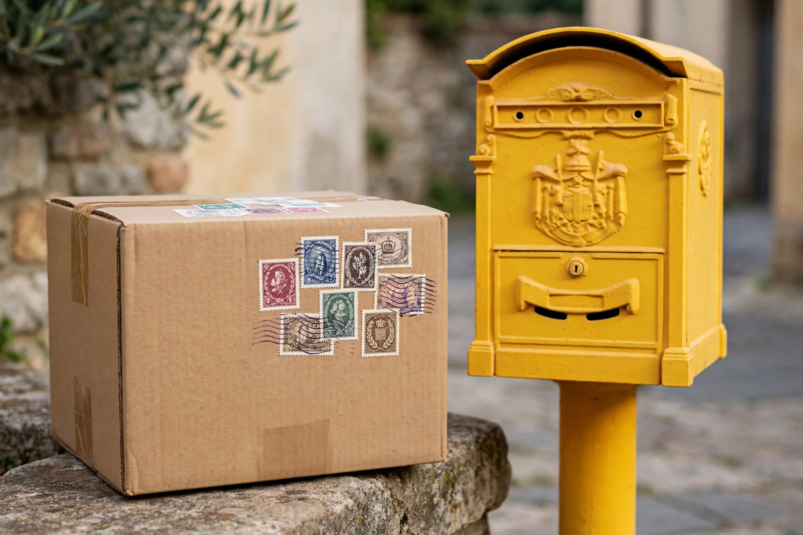

Stai aspettando un pacco e vuoi sapere a che ora passa il corriere? Poste Italiane non comunica un orario preciso per la singola consegna, ma le fasce orarie sono abbastanza prevedibili: la maggior parte delle consegne avviene tra le 8:30 e le 18:30, con le zone urbane servite di solito al mattino e le aree extraurbane nel pomeriggio. Ecco come orientarti e cosa fare se non sei in casa al momento del passaggio.
Il corriere di Poste Italiane, o di SDA per alcune spedizioni, lavora dal lunedì al venerdì, con una finestra indicativa dalle 8:30 alle 18:30. Nelle grandi città la consegna avviene spesso entro le 13:00, mentre nei piccoli centri può slittare al pomeriggio. Alcuni servizi espressi e le consegne prenotate possono arrivare anche il sabato mattina, ma la consegna standard non è garantita nel weekend. L'unico modo per sapere dove si trova il tuo pacco in tempo reale è il codice di spedizione: con la nostra guida su come tracciare un pacco Poste Italiane puoi controllare in pochi secondi se è partito, in transito o già in consegna.

Se il corriere non trova nessuno, lascia un avviso di giacenza nella cassetta delle lettere e il pacco torna all'ufficio postale indicato sull'avviso, dove resta disponibile per il ritiro, di solito per 10 giorni lavorativi. Per il secondo tentativo puoi anche chiamare o usare l'app Poste per fissare una nuova consegna, se il servizio lo prevede per la tua spedizione. Se invece hai scelto la consegna presso un Punto Poste o un locker, il pacco resta lì e puoi ritirarlo quando vuoi entro i termini indicati, con il codice ricevuto via SMS o email.
Quando il pacco è in transito, dall'app Poste Italiane o dal tracking Poste Italiane puoi chiedere il cambio di indirizzo, lo spostamento a un Punto Poste o il ritiro in ufficio, ma solo finché la spedizione non è "in consegna": una volta che il corriere è uscito con il pacco, la modifica non è più possibile. Il consiglio pratico è di controllare il tracking la mattina del giorno previsto e, se sai di non essere in casa, spostare subito la consegna a un punto di ritiro vicino a te.
Il sabato mattina Poste Italiane consegna solo le spedizioni espresse e alcune consegne programmate, non la posta ordinaria né i pacchi standard. Nei giorni festivi nazionali non c'è consegna, e il pacco riparte il primo giorno lavorativo successivo: tienine conto se la data stimata cade vicino a un ponte o a una festività. Se il tracking non si aggiorna per più di due giorni lavorativi, vale la pena contattare l'assistenza con il codice di spedizione a portata di mano.
Le consegne Poste Italiane arrivano in genere tra le 8:30 e le 18:30 dal lunedì al venerdì; il sabato solo per gli espressi. Se non sei in casa, il pacco va in giacenza all'ufficio postale e puoi ritirarlo entro 10 giorni lavorativi. Su paccotraccia.it.com trovi altre guide per seguire i tuoi pacchi Poste Italiane passo passo.